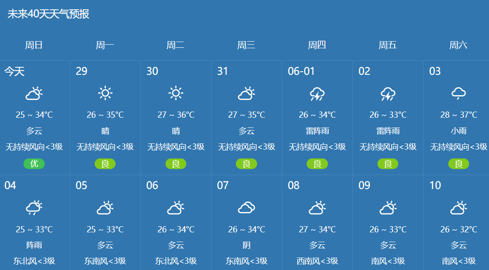
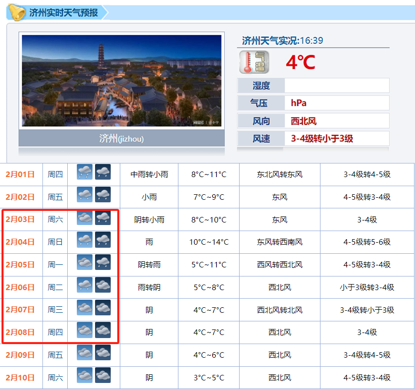
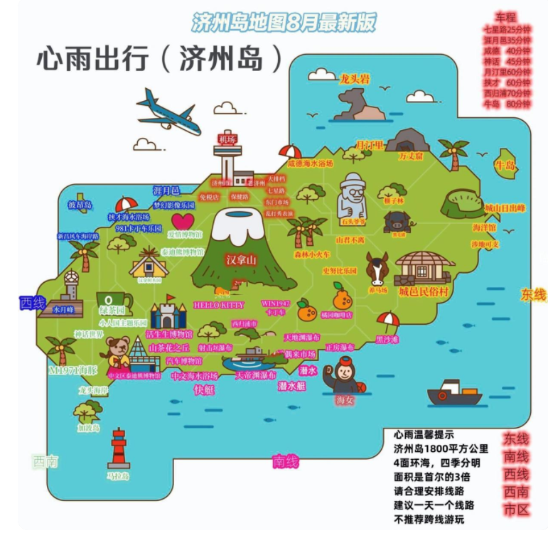
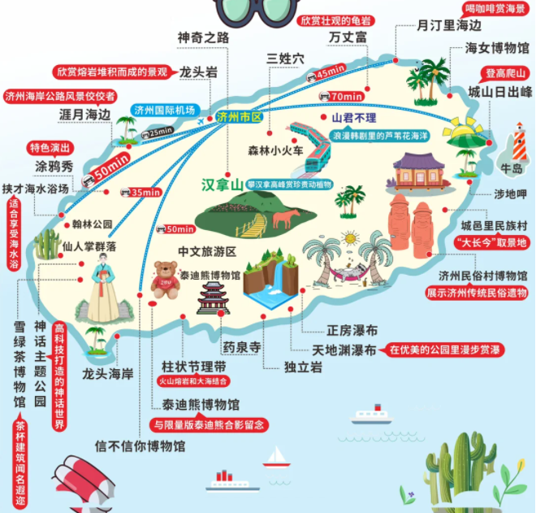

- 广州？
- 济州岛？
一 行程规划：广州
5月31号
- 9:20 → 广州白云机场
6月1号 特种兵一日游
- 【地铁到动物园站CB出口 → 动物园南门】广州动物园【8点开园，约3h】
- 吃饭
- 【地铁到越秀公园站站A出口【向南】 → 越秀公园西门】五羊石雕
- 【地铁到北京路】北为步行街，南为天字码头 → 中大码头【中山大学广场】
- 【中大码头 → 海心沙西区码头】海心沙广场
- 【apm线到大剧院站】广东省博物馆【三点至四点】
- 吃饭：牛杂
- 海心桥
6月2号 征战白云山
- 白云山西门
- 蜜蜂世界
- 芳香路
- 叠翠湖
- 明珠湖
- 桃花涧、许愿台、凉亭、星座平台、桃花源记石刻
- 竹溪
- 白云松涛
- 摩星岭【龙虎岗、锁爱台、白云山牌坊、白云山画廊】 → 摩星岭南门出
- 山顶公园【黄河石、缆车下山】
- 正门出
6月3号 惬意荔枝湾
- 荔湾博物馆
- 西关大屋
- 石上飞榕
- 荔枝湾小吃街
- 文塔
- 古风星巴克
- 泮塘五约历史文化街区【1200书店】
- 小酒吧【恶魔果实气泡酒】
- 有点雀跃【怀旧工艺品店】
- 随便逛了
【有可能三天雨，不过幸好是雷阵雨】

二 行程规划：济州岛【2024.2.3】

1 语言问题💬
英语+中文+翻译软件+比划，畅游济州没问题
2 物资准备
- 护照（6个月以上有效期）
- 回程机票 + 入住酒店确认单（虽然免签，但为了更丝滑过关，准备好以上打印件）
- 流量手机卡或wifi蛋【按出行天数🍑购入，比随身 wifi 方便】
- 充电转换插头（欧标）
- 充电宝【当地充电宝租赁便捷程度一般】
- 签字笔：写入境卡时使用
- 刷牙牙膏【大部分酒店不提供一次性用具】
- 4000人民币韩元
3 APP下载
所有App均能在国内下载完成
- 翻译软件：Naver Papago 可解决所有交流问题，无障碍
- 导航：Naver能查询当地店铺信息及相关事项，可韩译中，需连当地网络登入；配合大众dp一起使用
- 打车软件：Kaokao T，没有当地手机号码也可注册【但可能出现问题，尽可能公交车，但比较烧脑】
- Naver map需提前在🍑购入当地手机号
4 交通🚗
① 除包车外，当地以公交车、打车为主。市区部分打车方便，招手即可；偏远景区建议用kakao-t。
② 公交卡在每个便利店可购卡及充值，机场3F也有，7-11能办理，工本费比市区便利店贵一些
③ 公交卡可多人一卡的，上车告诉司机乘坐人数，会帮忙改价
④ 车不是每站停靠，座位边都有有stop红色按钮。看不懂韩文站名的，盯紧app，会实时更新路程进度。或者坐在前排，电视屏幕也会有站点播报。
⑤ 站点可查询到站的时间（app同步，还算准确），右上角有语言选项，可替换中文进行查询
⑥ 线路有分快慢线和机场线，按照线路的颜色来区分，机场线的票价会贵较多
⑦ 不是每班车都可携大件行李，部分车尤其快线车，车侧面有专门放行李处，上车之前让司机帮忙开门，放好行李再上车，比较轻松。
⑧ 济州岛的公交司机大哥开车都很生猛，系好安全带 + 拉好扶手
⑨ 不走回头路的话，建议包车环岛。我们一直住在济州市区，东线一天来回打车也是可以的。
5 其他注意事项
- 垃圾袋：济州岛对垃圾分类管理严格，公共场合包括马路上的垃圾桶很少，可带便携垃圾袋【公交车站一些看起来像垃圾桶的其实是信报箱，不要扔错了】
- 保温杯：餐厅、咖啡店提供的饮用水皆为冰水，且非常冰；冬天去的朋友不习惯喝冰水的可带保温杯。
- 大风大浪海上项目有临时停航，看好天气再出发避免跑空
- 一些有名的餐厅最好看一下营业时间 大多数14:00-15:30午休
6 旅友经验
- 济州岛分市区、西线、东线、南线、汉拿山，大致这五条线，东线景点最多，南线的景点比较凑合。
- 西线：涯月邑及周边 + 海鲜面馆
- 东线：济州海洋馆 - 涉地可支 - 城山日出峰【距离市区有一段距离，建议包车/打车。去涉地可支的路上就会路过海洋馆，有点小，本地人逛的居多】
- 西归浦【南线】：追海豚 - 偶来市场 - 橘园【济州岛的市井烟火气，有很多美食小吃】
- 济州市区：保健路-夜市-市区随便逛逛
- 济州岛交通真的太差了，等公车耗时长，景点去不了几个，佛系游可以考虑；人多建议包车，人少可以参加158/天的一日游小团，体验非常好！
- 新罗免税店比乐天大，且货更全，晚上18：00准时关门，一定看好时间。欧美大牌价格跟国内差不多，韩国品牌价格美丽，Gentle Monster可冲！
- 冬季也可以看海，风大的时候炒鸡冷！！冬天建议：看雪看山茶花看橘子


✨城邑民俗村【韩剧《大长今》取景地，可以参观体验韩国民俗】
✨泰迪熊博物馆
门口很好拍，展馆里的泰迪熊能cos一切，还有香奈儿联名的限定款，古早韩剧《宫》也在这里取过景
✅重点打卡地
1️⃣月汀里：淡蓝色果冻海🌊感受月亮驻足的地方，在碧海蓝天下享受徐徐海风的吹拂。
2️⃣城山日出峰：被联合国评为世界自然遗产⛰️俯瞰海景和城景，也是《我是金三顺》取景地。【30min就能爬到山顶，被大海拥抱的火山口，即使不看日出，在山顶也能俯瞰整个小镇】
3️⃣涉地可支：一面是悬崖一面是海洋，打卡网红灯塔和美术馆，欣赏济州岛日落【美的好像世界尽头，电影里的浪漫山海】
4️⃣柱状节理带：被称作冰岛火山岩的平替，海水拍打在黑礁石上非常震撼【很出片，但园子超小，所见即所得】
✅红榜
东门市场：吃货友好，带好现金，多数不刷卡
咸德海滩：美，但风炒鸡大！
山茶花之丘 ：冬天山茶花都开了
涯月邑海滩：果冻海超美，很多网红咖啡馆
道头洞彩虹海岸道路：济州岛超美的海岸公路精华段！沿途能看到黑色礁石、湛蓝大海和无数个浪漫的咖啡馆
橘园：济州岛产好多好多橘子，有很多橘园，济州岛的冬天都是被点亮的
✅黑榜【选去】
- 七星街：普通运动品牌，跟国内步行街没区别
- 绿茶博物馆：吃吃绿茶冰淇淋吧，其他没啥特别
- 紫菜博物馆：济州岛发展旅游业，很多特意兴建的博物馆，真的不值得去
⭐️美食推荐
✨东门市场：很多美食小吃
✨西归浦偶来市场：黑毛猪烤肉、橘子麻薯等美食
✨炸鸡：BHC炸鸡店【炸鸡和烤猪蹄等候时间一般40分钟 可以先点餐逛一下再回来取】
✨包饭：海女包饭
✨汤饭：张一品汤饭
✨肥肠：肥肠专家
✨橘子：济州岛的橘子很有名，橘子果汁、果酱、冰淇淋、橘子麻薯等
✨咖啡【济州岛很多咖啡店有规定入店一人一杯，只拍照不点容易引起误会】
7 行程
- Day 1市区：东门市场 -七星街 - 官德亭（市区到东门市场约40-50min，三个景点之间都步行可达）
- Day 2 东线（一日游团）：涉地可支 - 城山日出峰 - 咸德海滩 - 新罗免税店
- Day 3 西南线（一日游团）：山茶花之丘 - 柱状节理带 - 绿茶博物馆 - 涯月邑海滩 - 紫菜博物馆体验韩服
- 返程：买韩国炸鸡【市区想吃炸鸡没吃上！竟然早上不！开！门！】
⭐️行程安排
D1 杭州出发-济州岛（自由活动）
D2 泰迪熊博物馆-西归浦-新星岳
D3 跆拳道表演秀-城邑民俗村-城山日出峰-涉地可支
D4 韩国本土化妆品专卖店-道头洞彩虹海岸公路-
海苔博物馆韩服体验-国际免税店-散团回杭州
DAY1:国内-济州，入住酒店休息
⭐DAY2:海水汗蒸幕,涯月翰潭咖啡街,汉拿山国立公园(御里牧),冰雕馆+3D 馆+5D 电影,汉拿树木园夜市+五彩灯光街
⭐DAY3:晨星岳，绿茶博物馆，山茶花之丘，泰迪熊博物馆，药泉寺，独立岩，每日偶來市場
⭐DAY4: 涉地可支，阿里郎跆拳道表演秀，城邑民俗村，广峙其海边，城山日出峰
⭐DAY5:彩虹糖海岸公路，红白马灯塔，紫菜博物馆+韩服体验，国际免税店，莲洞商业街，送机✈️返回国内
7 酒店
果断建议住市区。一日游的包车，市区酒店都上门接的。我们住在空中花园酒店，距离机场坐600路公车一站路，打车5800韩币，在酒店集中区，附近还有很多酒店可选！附近很多网红饭店，去各个景点的公车也很多，简直宇宙中心！